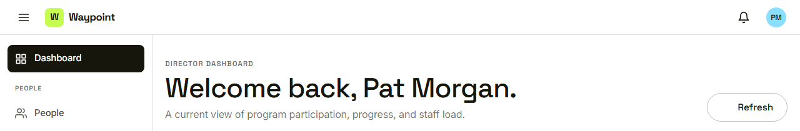

Waypoint · Video 092
When a page cannot be found
A clear way back to a safe home
Page not found
The page not found page
Back to the home for her role

Pat lands on her own dashboard
A missing record is handled the same way
A page that does not exist
A record the server cannot find
The same calm page, the same way back
Things to remember
A missing page ends at a plain page not found
One button leads back to safety
Signed-in people go to their own home; others go to sign in
A missing record is treated like a missing page